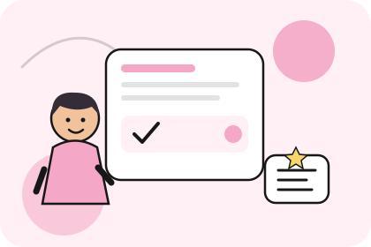

Знания, которые можно использовать
Обучение строится вокруг задач, соответствующих уровню: вы разбираете языковые конструкции, встречаете их в примерах и диалогах, а затем используете самостоятельно. Постепенное усложнение помогает связывать новые знания с уже освоенным материалом.
С чего начинается обучение
Вы продолжите совершенствовать грамматику и расширять словарный запас, уделяя больше внимания тому, как языковые средства работают в реальной речи. Научитесь точнее описывать события, выражать предположения, объяснять причины и последствия, сравнивать варианты и формулировать собственные выводы. Грамматические конструкции будут рассматриваться в контексте, чтобы вы понимали не только их форму, но и смысловые различия между похожими выражениями.
Важную роль играет умение связывать предложения в цельное высказывание. Вы будете учиться последовательно излагать мысли, использовать связующие слова, переходить от одного аргумента к другому и делать речь понятной для собеседника. Это особенно важно, когда нужно рассказать о сложном событии, объяснить свою позицию или обсудить вопрос, на который нет единственного правильного ответа.
Работа с текстами и аудиоматериалами поможет расширить представление о современном английском. Вы будете учиться понимать основную мысль, находить существенные детали, различать факты и мнения и использовать новые выражения в собственной речи.
Что вы будете учиться делать
Вы сможете обсуждать не только бытовые вопросы, но и темы, связанные с работой, учёбой, путешествиями, технологиями, культурой и общественной жизнью. Научитесь объяснять свою позицию, приводить аргументы, соглашаться или возражать, уточнять смысл сказанного и поддерживать беседу, даже если разговор развивается не по заранее знакомому сценарию.
Развитие навыков аудирования поможет лучше понимать естественную речь, в которой собеседники говорят в привычном темпе и используют разные выражения. Вы будете учиться улавливать смысл по контексту, замечать важную информацию и не терять нить разговора из-за каждого незнакомого слова.
Письменная практика позволит увереннее формулировать мысли в сообщениях, письмах и небольших текстах. Вы научитесь организовывать материал, выбирать подходящие формулировки и делать текст логичным и последовательным.
Кому подойдёт этот курс
Intermediate подойдёт тем, кто уже может общаться на английском в большинстве привычных ситуаций, рассказывать о своём опыте и понимать общий смысл разговоров и текстов. При этом могут возникать трудности, когда нужно подробно объяснить свою позицию, обсуждать абстрактные темы, воспринимать быструю речь или строить длинные высказывания без пауз.
Если вы замечаете, что базовой грамматики уже недостаточно для выражения сложных мыслей, а словарного запаса не всегда хватает для свободной дискуссии, этот уровень поможет систематизировать знания и развить навыки общения. Он также подойдёт тем, кто хочет использовать английский не только в поездках, но и в учёбе, работе и повседневном общении.
Если вы уже уверенно аргументируете свою позицию, понимаете большую часть материалов на знакомые темы и можете свободно поддерживать разговор, стоит пройти тест. Возможно, вы готовы перейти к Upper-Intermediate.
Результат обучения
Вы сможете увереннее выражать мнение, аргументировать свою позицию, понимать более сложные тексты и разговоры и поддерживать общение на широкий круг тем.